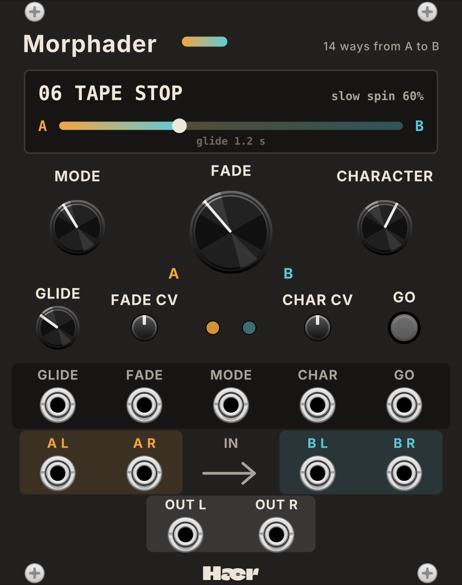

An ordinary crossfader only changes the level of the two signals. Morphader changes how A turns into B. Every mode follows the same rule: FADE fully left is exactly A, FADE fully right is exactly B, and the middle is where that mode does its thing.
| Mode | On the way from A to B | CHARACTER | Try it on | |
|---|---|---|---|---|
| 1 | Filter swap | A's low-pass closes while B's high-pass opens; they meet around 700 Hz in the middle. | resonance | two full loops: the classic DJ "bass swap" feel |
| 2 | Gate chop | Switches rapidly between A and B. In the centre it's 50/50 time; as you move, the time share tilts. | rate, 0.5 Hz to 2 kHz | slow: stutter edits. Above ~100 Hz: a new timbre (pulse-width-style mix) |
| 3 | Ring | A × B ring modulation rises to the centre, then gives way to B. | how wide the ring zone is | a drone against drums: metallic hits in the middle |
| 4 | Vocoder | A → A speaking with B's spectrum → B speaking with A's → B. | envelope release, slow to snappy | pad (A) and drum loop (B): the pad gets the groove |
| 5 | Spectral | Eight bands. B takes them over one at a time from the bass up. | overlap between bands | two full mixes: B's kick arrives first, its hats last |
| 6 | Tape stop | A slows down and darkens; B spins up from low. | how far the pitch drops (1 to 4 octaves) | GO with a 1 to 2 s glide for a tape-stop drop |
| 7 | Crush | A degrades into grit; B starts gritty and resolves. | bit depth ↔ sample rate | breaks and stabs |
| 8 | Dub throw | A is thrown into a feedback delay; its echoes trail off as B arrives. | echo time, 60 ms to 1 s | vocal chops or chords; GO for a dub-style exit |
| 9 | Reverb wash | A drowns in reverb; B emerges dry out of the wash. | decay, 0.6 to 12 s | breakdowns: wash the beat out, bring the pad up |
| 10 | Grain shuffle | Short grains picked at random, with the odds of B rising with FADE. Near the middle the grains also jump back in time. | grain length, 5 to 400 ms | two drum patterns: a glitchy, Autechre-ish handover |
| 11 | Freeze | As soon as FADE leaves A, A freezes into a loop that fades while B comes in live. | loop length, 30 ms to 1 s (live) | a held chord fragment under a new section |
| 12 | Env swap | First B's dynamics take over A (A plays B's rhythm), then B's sound takes over. | envelope release | pad (A) and hi-hats (B): the rhythm swaps before the sound |
| 13 | Fold | A wavefolds into noisy harmonics; B starts folded and unfolds. | fold amount | basslines and simple waves |
| 14 | Equal power | The standard crossfade, for reference. | linear → equal power → wide → DJ cut | anything |
Built for Haer, 2026. Source: github.com/hardyfinn/Morphader. Not yet tested inside Rack: please report anything odd.